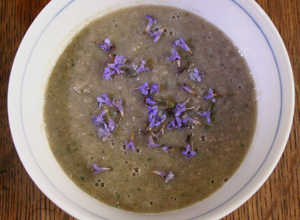

Soupe boisée aux champignons et lierre terrestre
Le mariage de ces deux plantes de sous-bois vous rappellera les douces odeurs d'un petit
matin d'automne dans une forêt humide.
Ingrédients
Pour 4 bols :

- 600 grammes de champignons de paris
- Une poignée de feuilles de lierre terrestre
- 1 oignon
- sel, poivre
Faire revenir un oignon dans un fond d'huile.
Lorsqu'ils deviennent transparent, ajouter les champignons coupés en rondelles.
Faire réduire les champignons à feu doux en ajoutant petit à petit les feuilles
de lierre terrestre.
Lorsque les champignons ont réduit de moitié, rajouter de l'eau, jusqu'à 1 centimètre
au-dessus des légumes. Rajouter le reste de feuilles de lierre terrestre.
Faire cuire 5 minutes à tout petit bouillon.
Mixer, servir dans des bols et rajouter quelques fleurs par dessus.
Il est important de ne jamais laver aucun champignon à l'eau avant de le préparer. Les
champignons sont en effet de véritables éponges qui ne demandent qu'à se gonfler. En
les mouillant, vous risquez de ralentir la cuisson et, finalement, de faire bouillir
les champignons plutôt que de les cuire. Une petite brosse à champignons ou un couteau
vous permettront d'enlever facilement les restes de terre ou les débris de feuilles.